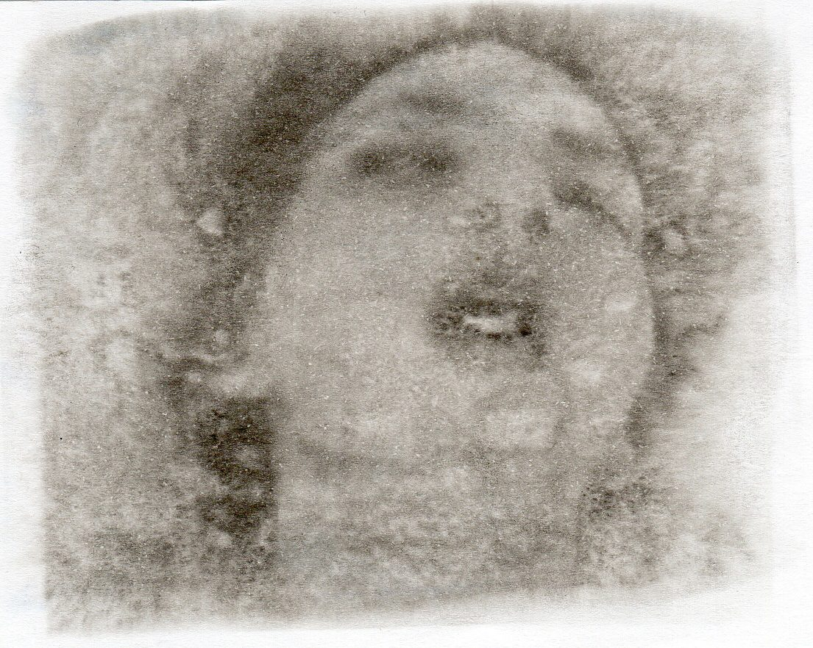
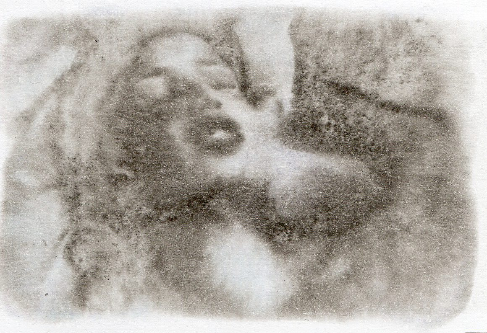
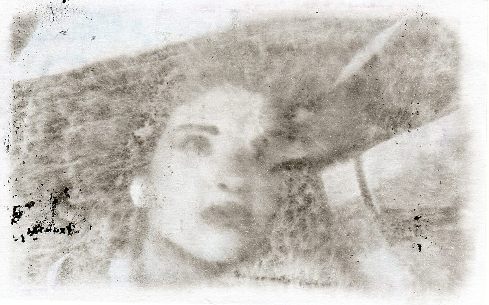
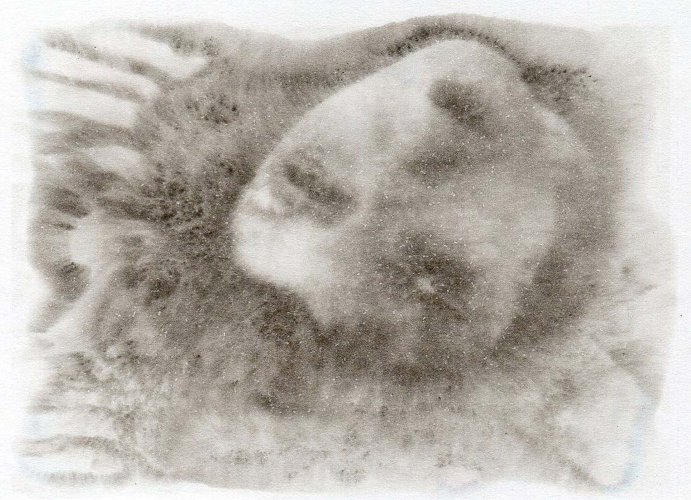
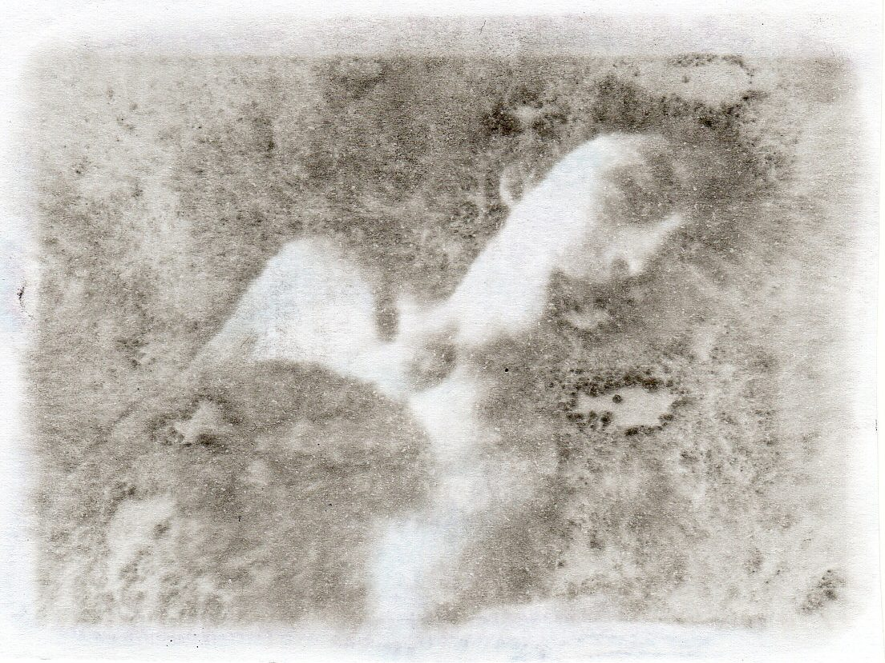

简介
将情色网站里的视频女性进行截图，仅保留面部，并用油墨转印的方式再次创作图像， 以得到带有犹如湿版印相的质感，被处理过的图像消解掉了原本带有强烈指向性的情色内容，观者甚至可以从中发掘到一丝油画般的古典美感，与视频本身所要传递的信息相割裂出来，将视角直接关注在图像本身上。





将情色网站里的视频女性进行截图，仅保留面部，并用油墨转印的方式再次创作图像， 以得到带有犹如湿版印相的质感，被处理过的图像消解掉了原本带有强烈指向性的情色内容，观者甚至可以从中发掘到一丝油画般的古典美感，与视频本身所要传递的信息相割裂出来，将视角直接关注在图像本身上。



